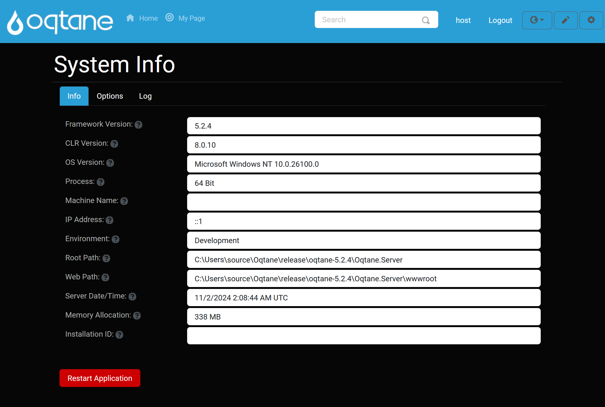
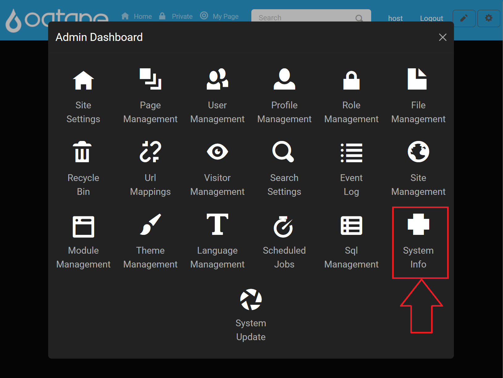
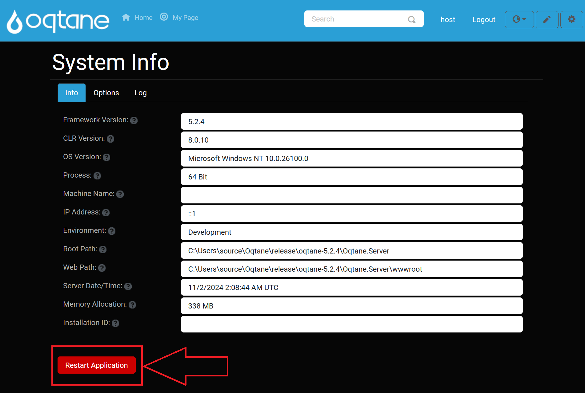
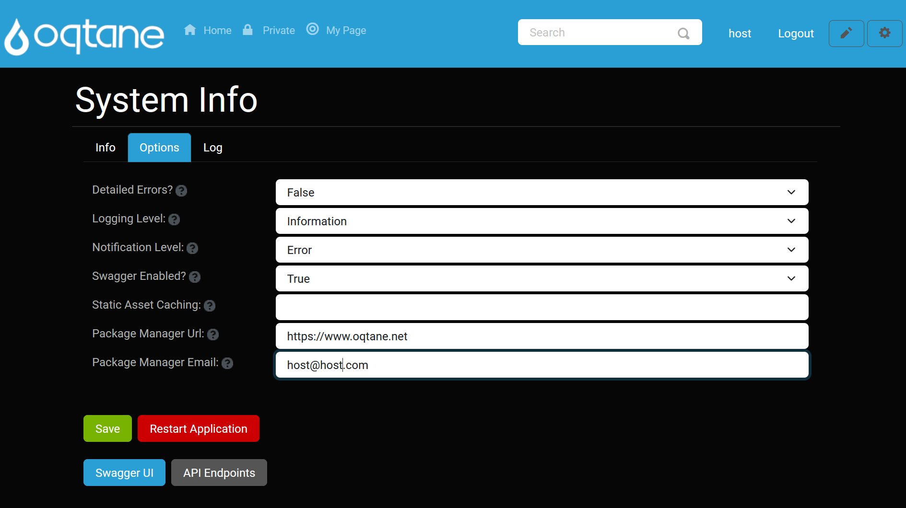
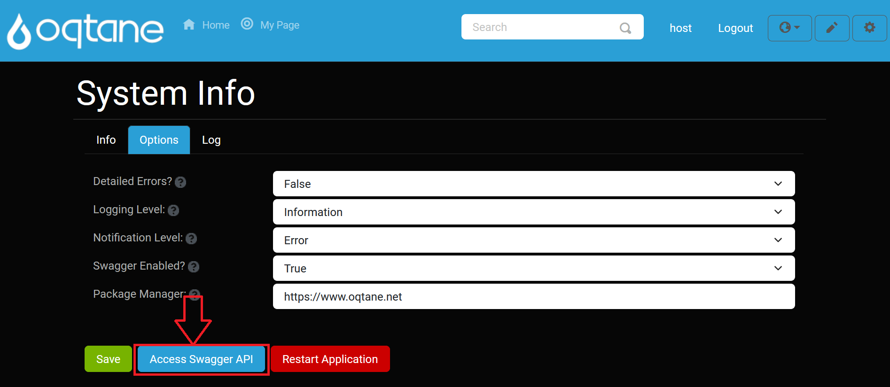
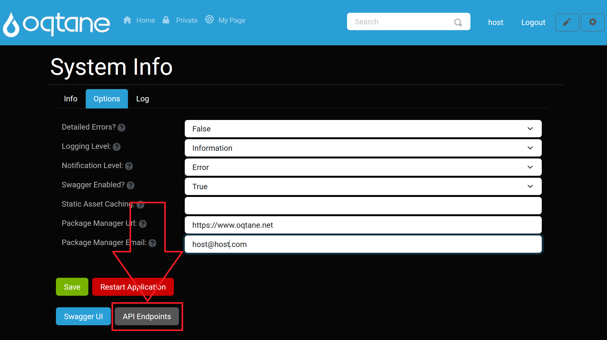
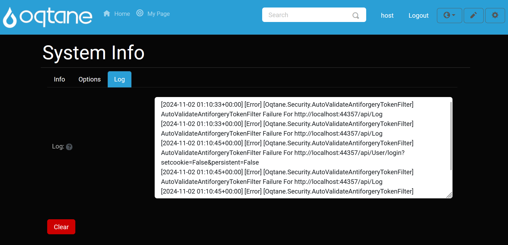
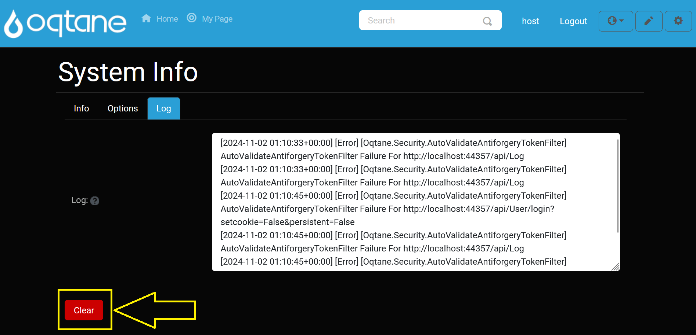
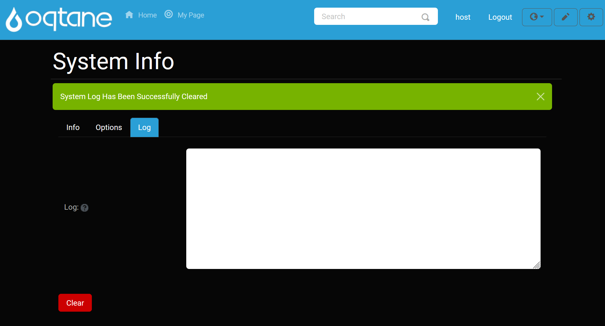

System Info

Overview
The System Info feature in Oqtane provides a centralized view into your environment’s health, configuration, and diagnostics. From framework versions to runtime memory usage, this tool helps administrators monitor the hosting infrastructure and fine-tune performance or debugging settings.
Key features include:
- System Environment Details – Check .NET versions, server OS, memory use, and more.
- Runtime Configuration Options – Toggle diagnostics, error visibility, caching, and logging levels.
- Developer Tools Access – Launch Swagger UI and inspect API endpoints.
- System Log Viewer – Monitor and clear real-time event logs for troubleshooting.
- Application Restart – Instantly restart the app to apply changes or clear server-side state.
Control Panel Walkthrough
Accessing the System Info Feature
Click the Control Panel icon to access additional settings.

In the control panel, click the Admin Dashboard button.

In the admin dashboard, select the System Info icon.

Info Tab (System Environment)
The Info tab displays critical environment and framework details for your Oqtane installation.
- Framework Version: The current Oqtane framework version.
(Tooltip: "Framework Version") - CLR Version: The .NET Common Language Runtime version in use.
(Tooltip: "Common Language Runtime Version") - OS Version: The operating system version of the hosting server.
(Tooltip: "Operating System Version") - Process: Indicates if the application is running in a 32-bit or 64-bit process.
(Tooltip: "Indicates if the current process is 32 bit or 64 bit") - Machine Name: The server machine’s host name.
(Tooltip: "Server Machine Name") - IP Address: The server’s network IP address.
(Tooltip: "Server IP Address") - Environment: The ASPNETCORE environment name (e.g., Development, Production).
(Tooltip: "Environment Name") - Root Path: The application’s content root path on disk.
(Tooltip: "Server Root Path") - Web Path: The application’s web root path on disk.
(Tooltip: "Server Web Root Path") - Server Date/Time: Current server UTC date and time.
(Tooltip: "Server Date/Time (in UTC)") - Memory Allocation: Current memory usage of the process (MB).
(Tooltip: "Memory Allocation Of Service (in MB)") - Installation ID: A unique identifier for this Oqtane installation.
(Tooltip: "The Unique Identifier For Your Installation")
Restart Application: Restarts the application domain to apply configuration changes or clear state.

Options Tab (Runtime Configuration)

The Options tab lets you configure runtime behaviors and diagnostics:
- Detailed Errors?: Enable detailed Blazor error messages (do not use in Production).
(Tooltip: "Specify If Detailed Errors Are Enabled For Blazor. This Option Should Not Be Enabled In Production.") - Logging Level: Set the minimum severity for writing to the event log.
(Tooltip: "The Minimum Logging Level For The Event Log. This Option Can Be Used To Control The Volume Of Items Stored In Your Event Log.") - Notification Level: Set the minimum severity for sending notifications to Host users.
(Tooltip: "The Minimum Logging Level For Which Notifications Should Be Sent To Host Users.") - Swagger Enabled?: Toggle the built-in Swagger UI for the server API.
(Tooltip: "Specify If Swagger Is Enabled For Your Server API") - Static Asset Caching: Provide a Cache-Control directive for static files (e.g.,
public, max-age=60).
(Tooltip: "Provide a Cache-Control directive for static assets. A blank value disables caching.") - Package Manager Url: URL for the package registry service used by the Package Manager.
(Tooltip: "Specify The Url Of The Package Manager Service For Installing Modules, Themes, And Translations.") - Package Manager Email: Email account used for authenticating with the package registry.
(Tooltip: "Specify The Email Address Of The User Account Used For Interacting With The Package Manager Service.")
After adjusting options, click Save or Restart Application. You can also quickly launch the API tools:
Swagger UI: Opens the interactive Swagger documentation for exploring and testing the server API.

API Endpoints: Displays a detailed list of all registered API routes, methods, and controller actions in your Oqtane installation.

Log Tab (System Log)

The Log tab shows today’s system log entries for diagnostics:
- Log: A read-only textarea displaying real-time system events.
(Tooltip: "System log information for current day")
Clear: Purges the log content.

After clearing, confirm the action:
